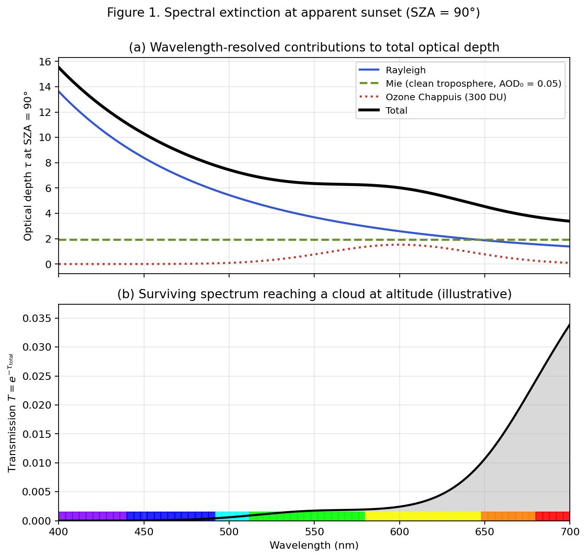
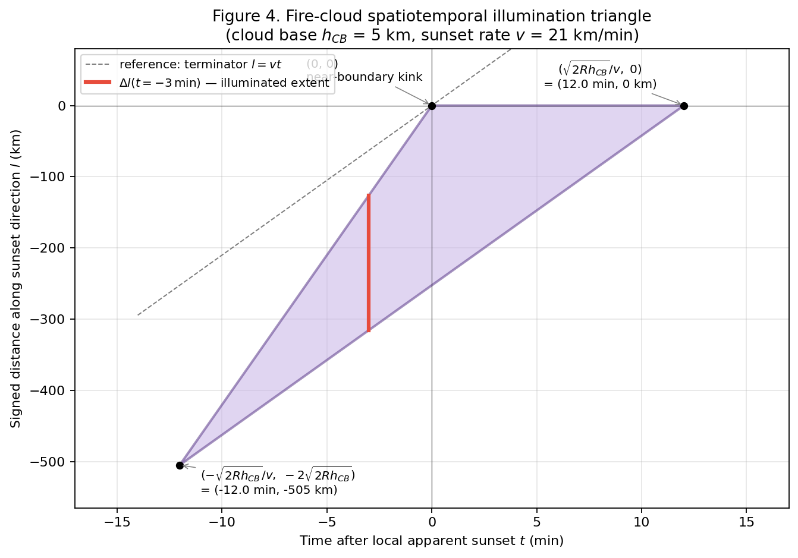
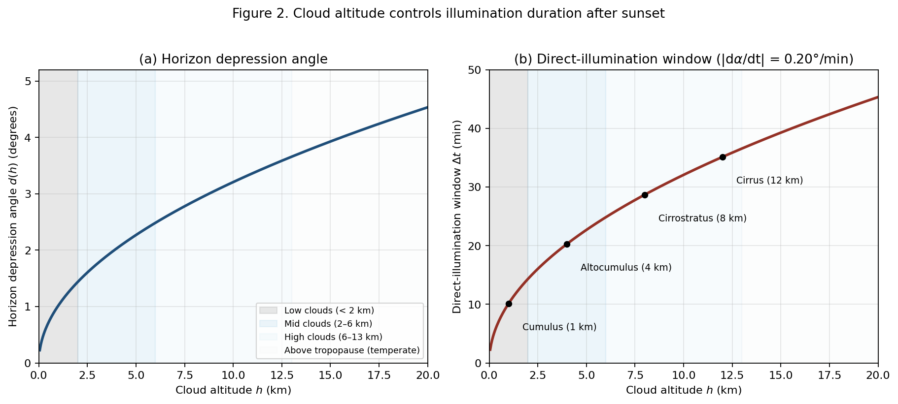
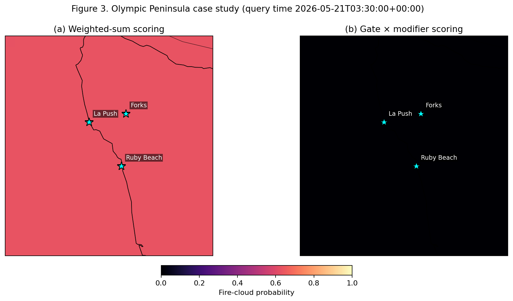

火烧云
从大气光学、日落几何、云物理三条线索出发，把一个常见但极少被系统讨论的天象，拆解成可计算的预测问题。
1.题目：火烧云为什么难预测
"火烧云"（英文文献：afterglow / sunset glow）指日落或日出前后，中高云被低角度阳光从底部照亮、呈现红橙粉紫的现象。它不发光——它反射的是已经被大气层"过滤"过的红化阳光。这一现象在文化中很常见，但在科学预测上却出奇地稀缺：迄今为止，公开可用的几个预测服务（SunsetWx、Sunsethue、PhotoPills Skyfire）都没有发表过同行评议的方法论文，也不公开模型权重，更未做过系统的与地面观察的统计对比。
这并不是因为问题太复杂。这个题目涉及的物理子模块都很成熟：分子瑞利散射（Strutt 1871[1]）、米散射（Mie 1908[2]）、臭氧 Chappuis 吸收（Hulburt 1953[3]；定量重审见 Lange 等 2023[4]）、Kasten–Young 大气光程公式（1989[5]）、行星边界层物理。难点不在物理本身，而在如何把这些机制串起来，并把它们映射到可观测的气象数据上，最终给出一个可计算、可验证的预测函数。
这份笔记把这个串联工作系统地写一遍。读完应该能回答：为什么天空会变红？为什么只有特定的云能"烧"？为什么现有的简单预报方法在物理上有结构性问题？又如何用一个具体的两层架构（必要条件作 gate × 增强条件作 modifier）来修正它？最后用一次实测案例来证明这套修正确实成立。
2.大气光学：阳光被选择性消光
火烧云的颜色来源是选择性消光——白色阳光在穿越大气的过程中，不同波长被以不同的强度散射或吸收掉，剩下的光抵达云层、被反射给观察者。三种机制共同贡献，但波长依赖性大不相同。
2.1 瑞利散射
当散射体（这里是空气分子）的尺寸远小于光的波长时，散射截面满足瑞利公式：
$$\sigma_R(\lambda) = \frac{8\pi^3 (n^2 - 1)^2}{3 N^2 \lambda^4}$$
其中 $n$ 是空气折射率、$N$ 是分子数密度。关键事实是 $\sigma_R \propto \lambda^{-4}$：紫光（400 nm）的散射截面是红光（700 nm）的 $(700/400)^4 \approx 9.4$ 倍。这就是为什么白天天空是蓝色——蓝紫光被打到各个方向，从天空各处进入眼睛；而日落时只剩红橙——蓝紫已经在长光程上被全部散射掉了。
更精确的处理需要加上 King correction factor（约 1.05，反映分子各向异性）和折射率色散修正，详见 Bodhaine 等 1999[6]。这些修正在主导项 $1/\lambda^4$ 之上是 5% 量级，本笔记不展开。
2.2 米散射
当散射体尺寸与光的波长可比时，瑞利近似失效，必须用 Mie 1908 的完整电磁散射解。关键无量纲量是尺寸参数：
$$x = \frac{2\pi r}{\lambda}$$
三个区域：
- $x \ll 1$：回到瑞利极限，$\sigma \propto \lambda^{-4}$。
- $x \sim 1$：米散射振荡区，整体波长依赖性弱，接近"灰色"散射。
- $x \gg 1$：几何光学极限。
对可见光（$\lambda \in [0.4, 0.7]\,\mu$m）和典型对流层气溶胶（半径 $r \in [0.05, 0.5]\,\mu$m），$x$ 落在 1–10，处于米散射区。这意味着城市污染、矿物尘、生物质燃烧颗粒物对各种波长的可见光的散射强度差不多——它们不会优先散射蓝光、保留红光，而是均匀地把整个光谱拖到暗灰。这就是雾霾天的日落看起来浅黄暗淡而非鲜红的根本原因。
2.3 臭氧 Chappuis 吸收
这是 Lange 等 2023[4] 用 SCIATRAN 辐射传输模型重新量化的一项贡献。臭氧分子在 500–700 nm 有一个宽吸收带（Chappuis 带），主峰约 600 nm。日落时太阳光走的水平路径所穿越的臭氧柱比正午约高 30 倍，所以 Chappuis 吸收在消光预算里的占比从正午 < 5% 上升到 SZA = 90° 时的 66%。
主要量化结果
太阳天顶角 90°、天顶视向、总臭氧柱（TOC）300 DU 时：臭氧 Chappuis 贡献 66% 的天顶天空蓝色，瑞利散射仅占约 34%。这一比例随 TOC 系统性变化：TOC = 240 DU 时为 60%，500 DU 时为 76%（Lange 等 2023[4]）。
这一结果颠覆了教科书"瑞利单独解释蓝天"的简化叙事。对火烧云而言，它的含义是：日落红橙光在最后阶段还要再被 Chappuis 带吸收一次橙黄绿，让残光更偏向纯红——这是一道"二次过滤"。
2.4 合成：Beer–Lambert 消光
三种机制在光学厚度上简单相加，光强按指数衰减：
$$\frac{I(\lambda)}{I_0(\lambda)} = e^{-\tau_{\text{total}}(\lambda)}, \quad \tau_{\text{total}}(\lambda) = \tau_R(\lambda) + \tau_{\text{Mie}}(\lambda) + \tau_{\mathrm{O_3}}(\lambda)$$

3.日落几何：长光程与时空三角
第 2 节的消光公式以"光程长度"为输入。日落时之所以光谱被剧烈改造，根源就在于此时光程是正午的几十倍。这一节把这层几何讲清楚。
3.1 大气光程：Kasten–Young 公式
定义相对光学大气质量 $m$ 为实际斜射光程长度对天顶光程长度的比值。平面平行近似下（$\text{SZA} \lesssim 75°$ 时成立）：
$$m \approx \sec(\text{SZA}) = \frac{1}{\cos(\text{SZA})}$$
近地平线时 $\sec$ 发散，必须用球面修正。当代标准是 Kasten 和 Young 1989[5] 在 ISO 标准大气 1972 廓线上数值积分得到的拟合公式：
$$m(\text{SZA}) = \frac{1}{\cos(\text{SZA}) + 0.50572 \, (96.07995 - \text{SZA})^{-1.6364}}$$
| 太阳高度角 $\alpha$ | 天顶角 SZA | 大气质量 $m$ |
|---|---|---|
| 90°（正天顶） | 0° | 1.00 |
| 30° | 60° | 2.00 |
| 10° | 80° | 5.60 |
| 5°（火烧云阶段开始） | 85° | 10.4 |
| 1° | 89° | 27 |
| 0°（视日落） | 90° | 38 |
表 1. 不同太阳高度角下的 Kasten–Young 大气质量。视日落时光程是正午的 38 倍——第 2 节中的所有消光积分（瑞利、米、Chappuis）都以这个因子被放大。
3.2 平面化坐标系：把直线变抛物线
球面坐标的三角函数让几何推导繁琐。引入弧长坐标：定义 $l = R_\oplus \theta$ 沿地表的弧长，$h$ 为海拔。在这个坐标系里，等海拔面变成水平直线；但原本沿真空中直线传播的阳光，在新坐标里变成抛物线。展开到二阶（误差 $\sim (l/R_\oplus)^4$，几百公里尺度可忽略）：
$$h(l) \approx \frac{l^2}{2 R_\oplus}$$
更一般地，一条切于地表点 $(l_0, h_0)$ 的光线在新坐标里写作：
$$h(l) = \frac{(l - l_0)^2}{2 R_\oplus} + h_0$$
这个变换的妙处在于：三角函数被多项式代替，地球自转（改变太阳高度角）被一个抛物线沿 $l$ 方向的平移代替。所有关于火烧云时空分布的推导一下子变得简单。
第一个应用：把云底高度 $h_{CB}$ 代入约束 $h(l) = h_{CB}$，立即得到光线沿地表能"穿透"的最远距离：
$$|l|_{\max} = 2\sqrt{2 R_\oplus h_{CB}}$$
代入 $R_\oplus = 6371$ km：$h_{CB} = 2$ km 给 $|l|_{\max} \approx 319$ km；5 km 给 505 km；10 km 给 714 km。这是火烧云能"打到"多远的解析上限。 观察者若想看到火烧云，候选云的近边界距离必须在这个范围内。
3.3 火烧云时空三角
结合 3.2 的几何与地球自转，可以闭式地写出"什么时间、什么位置能被火烧云照亮"。设观察者位于原点，云层底高度均为 $h_{CB}$。定义 $v = -R_\oplus \, d\phi/dt$ 为日落终结线沿日落方向的线速度。在日落后时刻 $t$，可被照亮区域由两条边界限定：
远边界（由地球阴影决定，光线沿地表切线传播）：
$$l_f(t) = -L + vt, \quad \text{其中 } L \equiv \sqrt{2 R_\oplus h_{CB}}$$
近边界（由云本身的边界遮光决定）：
$$l_n(t) = \begin{cases} 2vt, & t \le 0 \\ 0, & t > 0 \end{cases}$$
两条边界在 $(t, l) = (-L/v, -2L)$ 和 $(L/v, 0)$ 处相遇。中间区域是一个三角形（图 2）。

从三角形可以直接读出几条有用的常识：
- 平底层状云的本地天顶火烧云永远在日出前或者日落后出现，从不与日出/日落同时。
- 云底越高，三角形两个方向都按 $\sqrt{h_{CB}}$ 比例扩大：火烧云照得越远、持续越久。
- 任意固定位置看到的最长持续时间出现在离云边界最近处，不在云的中央。
- 傍晚的火烧云从云的最内侧（最接近观察者的一侧）开始，向外侧扩展；早晨次序相反。
- 即使云的"日落方向边界"已经低于观察者地平线，火烧云仍可能可见——只要边界足够远。
3.4 云高度决定的照亮时长
从 3.2 公式 $h(l) \approx l^2/(2R_\oplus)$ 反解出，云在高度 $h$ 处能"看到"已落下到地平线下角度 $d$ 的太阳，当且仅当：
$$d(h) = \arccos\left(\frac{R_\oplus}{R_\oplus + h}\right) \approx \sqrt{\frac{2h}{R_\oplus}}$$

4.云物理：为什么只有中高云能烧
第 3.4 节的几何窗口只是三个独立机制之一。中高云在火烧云上的统治地位，是三种机制叠加的结果。
4.1 云的分层（WMO 标准）
| 层 | 云底高度（温带） | 主要云属 | 组成 | 光学厚度 $\tau_c$ |
|---|---|---|---|---|
| 高云 | 5–13 km | 卷云 Ci, 卷积云 Cc, 卷层云 Cs | 冰晶 | 通常 < 1 |
| 中云 | 2–6 km | 高积云 Ac, 高层云 As, 雨层云 Ns | 水滴/冰晶混合 | 1–10 |
| 低云 | < 2 km | 层云 St, 层积云 Sc, 积云 Cu | 水滴 | 常 > 10 |
表 2. WMO International Cloud Atlas 的三层分类[7]。NOAA HRRR 数值预报里的 HCDC / MCDC / LCDC 三个变量大致对应这三层。
4.2 行星边界层（PBL）
大气最底部、受地表摩擦和加热驱动而剧烈混合的那一层，称为行星边界层。中纬度白天典型 PBL 厚度 1–2 km，夏季干燥地表可达 3 km，夜间塌缩到几百米；日落后白天的"残层"在 ~2 小时内还保留高浓度气溶胶。
PBL 包含 90%+ 的对流层气溶胶、水汽和人为污染物。低角度日落光要水平地穿过 PBL 这段最厚的"脏"大气，遭遇的累积消光远大于自由对流层。
4.3 三个独立机制
机制 1：几何照亮窗口（已在 3.4 节展开）。低云 1 km 的直射窗口只有 5–10 分钟，高云 10 km 可达半小时。差异随 $\sqrt{h}$ 扩大。
机制 2：PBL 对来光的衰减。低角度阳光在到达 PBL 上方之前，要水平地穿过整段 PBL。城市 PBL 在可见波长的光学厚度 $\tau_{\text{PBL}} \approx 0.3$–$1.0$，意味着原光衰减到 $e^{-\tau_{\text{PBL}}} \approx 37\%$–$74\%$ 才到 PBL 顶。关键是这是无波长选择性的米散射衰减——它不优先保留红，只是把整个光谱均匀压暗。Corfidi 2014[8] 操作性地总结为：
"A cloud must be high enough to intercept 'unadulterated' sunlight—light that has not suffered attenuation by passing through the atmospheric boundary layer."
—— Corfidi (2014), NOAA Storm Prediction Center
中云和高云按定义位于 PBL 之上；低云完全嵌在 PBL 之内。
机制 3：低层水云的高光学厚度。层云/层积云的可见波段光学厚度 $\tau_c > 10$，对入射光近乎不透。即便有一缕红化阳光到达低云顶部，在如此密集的水滴散射体中也会被搅成均匀灰白，几乎无波长选择性地反射，看不出红橙。卷云和高积云相反，$\tau_c \lesssim 1$，光能部分透过、被冰晶散射、保持色彩。
三个机制独立、叠加。即便强行设想一片低云在几何上能被照亮、且坐落在异常清洁的边界层之上——它的光学厚度仍会扼杀颜色。这种三重冗余是为什么在预测架构中（第 6 节）"中高云存在"必须作为一票否决的 gate，而不是能被其他变量补偿的 modifier。
5.气溶胶与颜色：双层逆向作用
第 2 节的尺寸参数框架有一个引人注目的物理结果：平流层和对流层气溶胶虽然都是"大气中的颗粒物"，但对火烧云颜色的作用方向相反。
5.1 两个气溶胶库
| 库 | 高度 | 主要成分 | 典型半径 $r$ | 散射区 |
|---|---|---|---|---|
| 平流层 | 12–50 km | 火山硫酸盐、陨石尘 | 0.05–0.2 μm | 接近瑞利极限 |
| 对流层 | 0–12 km （90%+ 在 PBL） | 硫酸盐、黑碳、矿物尘、海盐、烟雾 | 0.1–10 μm （质量主要在 0.5–2 μm） | 米散射振荡区 |
表 3. 大气中两个物理上分开的气溶胶库，及其特征尺寸与散射区。
回到 2.2 节的尺寸参数：尺寸远小于波长的粒子按 $\lambda^{-4}$ 散射，选择性地剥掉蓝；尺寸与波长相当的粒子近似波长无关，均匀压暗整个光谱。两个库就因此朝相反方向作用：平流层气溶胶强化红色，对流层气溶胶压制对比度。
5.2 历史案例
Krakatoa 1883。1883 年 8 月 Krakatoa 大爆发把约 20 km³ 物质注入大气，相当部分以 SO₂ 形式进入平流层并氧化为硫酸盐液滴。Symons 1888 的英国皇家学会专著记录了之后约三年间的全球异常日落和持久 afterglow[9]。Ribeiro 等 2024[10] 用现代辐射传输模型重新分析了"绿色火山日落"，归因于 0.1–0.3 μm 的特定粒径分布在特定光程几何下产生的绿色透射窗口。
Pinatubo 1991。1991 年 6 月 Pinatubo 喷发把约 20 Mt SO₂ 注入平流层，全球 550 nm 平流层 AOD 从背景 0.01–0.02 升到 0.15 量级。Mateshvili 等 2005[11] 在格鲁吉亚 Abastumani 天文台对九个波长（422–820 nm）做了 1991–1993 年的暮光多光谱测量，气溶胶层在 SZA–亮度曲线上表现为明显"驼峰"，于 1991-12 / 1992-01 达峰。
现代对流层污染。亚洲沙尘事件 AOD > 1（Husar 等 2000[12]）、北美山火烟羽、大都市持久雾霾——都对应暗淡褪色的日落，而非鲜艳火烧云。机制即米散射区的非选择性消光。
5.3 Lee–Hernández-Andrés Goldilocks 修正
对上面这套图景的朴素读法是"对流层越干净越好"。Lee 和 Hernández-Andrés 2003[13] 用对暮光紫光光谱的时间序列测量结合辐射传输模型证明了这一直觉的局限：
"Background stratospheric aerosols by themselves do not redden sunlight enough to cause the purple light's reds. Furthermore, scattering and extinction in both the troposphere and the stratosphere are needed to explain most purple lights."
—— Lee & Hernández-Andrés (2003), Applied Optics
即多次散射通路需要对流层也有一定的散射来支撑——零对流层气溶胶并不是最优。这意味着"清洁空气"是个 Goldilocks 变量：太高确实压制颜色，但太低也未必是最佳。对火烧云的"反射"现象，最优区接近清洁端但不为零。
5.4 等效云底高度：气溶胶对几何的修正
气溶胶浓度按指数随高度衰减，scale height $h_a$ 量级 500–4000 m：
$$\beta(h) \approx \beta_0 \, e^{-h/h_a}, \quad \text{AOD} = \beta_0 h_a$$
设阈值 $\beta_x$ 之上的气溶胶层视为"对阳光透过完全致密"，对几何模型来说它实际上把"地球阴影边界"抬高到了等效高度 $h_x$：
$$h_x = h_a \, \ln\!\left(\frac{\beta_0}{\beta_x}\right) = h_a \, \ln\!\left(\frac{\text{AOD}}{h_a \, \beta_x}\right)$$
等效云底高度 $h_{CB, \text{eff}} = h_{CB} - h_x$；第 3 节的最大穿透距离相应变成 $2\sqrt{2R_\oplus h_{CB, \text{eff}}}$。取经验阈值 $\beta_x = 0.02$ km⁻¹（对应能见度公式 $\text{Vis} = -\ln(0.02)/\beta_{550} \approx 196$ km），在 AOD = 0.15 下：
| 气溶胶 scale height $h_a$ (km) | 等效阴影高度 $h_x$ (km) |
|---|---|
| 0.5 | 1.35 |
| 1.0 | 2.01 |
| 1.5 | 2.41 |
| 2.0 | 2.64 |
| 2.5 | 2.74 |
| 3.0 | 2.75 |
| 3.5 | 2.66 |
| 4.0 | 2.51 |
表 4. 不同 scale height 下的等效阴影高度，AOD = 0.15。在中等情形下 $h_x \approx 2.7$ km：原本 5 km 的云底实际只剩 2.3 km 的"有效"高度，最大穿透距离从 505 km 缩到 339 km（33% 衰减）。云底接近 $h_x$ 时，阳光根本到不了云底。
6.从理论到预报：必要 × 增强的两层架构
第 2–5 节的物理可以归纳成一份必要条件 vs 增强条件的分类表：
| 类别 | 变量 | 依据 |
|---|---|---|
| 必要 （缺一即归零） |
中/高云存在 | 第 4 节三机制 |
| 低层 + 西方地平线通透 | 第 4 节机制 2 | |
| 太阳处于暮光窗口（$\alpha \in [-6°, +5°]$） | 第 3 节 | |
| 对流层气溶胶（Goldilocks，趋向清洁端） | 第 2.2 节 + 第 5.3 节 | |
| 增强 （影响强度/色彩，可被其他变量补偿） |
中高云覆盖率在 40–75% 区间 | SunsetWx / Sunsethue 经验 |
| 云高度组成（高云权重高于中云） | 第 3.4 + 4.3 节 | |
| 总臭氧柱（TOC） | 第 2.3 节 Lange 2023 | |
| 湿度在 40–80% | Sunsethue 经验 |
表 5. 火烧云形成条件的必要 / 增强二分。该分类直接对应第 6.2 节中的 gate / modifier 划分。
6.1 现有方法的结构性缺陷
市面上几个公开预测服务（SunsetWx、Sunsethue 等）的方法可以归结为对所有变量按权重做加权和：
$$P_{\text{add}} = \frac{\sum_i w_i s_i}{\sum_i w_i}$$
这种构造的结构性缺陷是：对任何规则 $r_i$，把 $s_i$ 从 0 升到满分，都可以补偿另一规则 $r_j$ 的 $s_j = 0$，只要 $w_i \ge w_j$。代数里根本没有可以表达"这一条不容妥协"的位置。后果是：当某个必要条件不满足时（如"完全没有中高云"），其他增强条件还能把分数撑到 0.5 量级，给出看似可信但物理上不可能的预测——一种结构性的假阳性。
6.2 Gate × Modifier 架构
把规则集 $\mathcal{R}$ 按表 5 分成必要 $\mathcal{G}$ 和增强 $\mathcal{M}$ 两组。
Gate 层：必要条件用加权几何平均组合，称为 $G$：
$$G = \prod_{i \in \mathcal{G}} s_i^{\,w_i / W_G}, \quad W_G = \sum_{i \in \mathcal{G}} w_i, \quad G \in [0, 1]$$
定义性质：$G = 0$ 当且仅当某个 $s_i = 0$。权重 $w_i$ 表达"必要程度的相对排序"，但任何权重组合都不足以让某一项的 0 被其他项补偿。当 $s_i \to 0$ 时，$G$ 超线性地塌向 0。
Modifier 层：增强条件用标准加权算术平均：
$$M = \frac{\sum_{j \in \mathcal{M}} w_j s_j}{\sum_{j \in \mathcal{M}} w_j}, \quad M \in [0, 1]$$
在这一层里，变量之间可以相互补偿——这正是"增强"语义所要求的。
复合得分：
$$P = G \cdot M \in [0, 1]$$
边界情形：$\mathcal{M} = \emptyset$ 退化为纯 gate；$\mathcal{G} = \emptyset$ 退化为标准加权和（即 SunsetWx / Sunsethue 模式）。感兴趣的是 $|\mathcal{G}| \ge 1$ 且 $|\mathcal{M}| \ge 1$ 的中间情形——gate 阻止假阳性，modifier 在 gate 通过后做精细区分。
这套结构是noisy-AND 模型（Pearl 1988[14]）的松弛形式。严格 noisy-AND 在独立性下是 $\prod_i s_i$（即我们的 $G$ 在 $w_i = 1$ 时的特例）；权重指数 $w_i / W_G$ 让我们能区分必要条件的相对重要性。我们不采用严格 noisy-AND，因为中等 gate 值（如 0.4）不应像精确 0 那样把整体归零。
7.实测：奥林匹克半岛 2026-05-20
2026 年 5 月 20 日 20:30 PDT（03:30 UTC, 5-21），用上述预测器在华盛顿州奥林匹克半岛海岸做了一次端到端预报。区域 $1.4° \times 1°$（含 Forks、La Push、Ruby Beach），0.1° 网格 = 180 个查询点。数据源 NOAA HRRR 模式 01:00 UTC 实况运行的 fxx=2 时次（在查询时刻为已经发布的验证预报）。
7.1 加权和方法的结果
用第 6.1 节描述的加权和方法，权重 $\{w_{\text{mid\_high}}, w_{\text{low\_obstr}}, w_{\text{solar}}, w_{\text{humidity}}\} = \{2.0, 2.0, 1.5, 1.0\}$，180 个点都返回大约 0.625–0.631 的均匀概率。在代表性点 $(47.70°\text{N}, 124.80°\text{W})$ 的分解：
| 规则 | $s_i$ | $w_i$ | $w_i s_i$ |
|---|---|---|---|
MidHighCloudPresence | 0.00 | 2.0 | 0.00 |
LowCloudObstruction | 1.00 | 2.0 | 2.00 |
SolarAngleAtSunset | 1.00 | 1.5 | 1.50 |
HumidityFactor | 0.60 | 1.0 | 0.60 |
| $\sum w_i = 6.5$ | $\sum w_i s_i = 4.10$ | ||
表 6. 代表性点的加权和分解：$P_{\text{add}} = 4.10 / 6.5 = 0.631$。背后的 HRRR 报告值：高云 0.0%、中云 0.0%、低云 18.0%、2m 相对湿度 86.0%、本地视日落 04:08 UTC（21:08 PDT），查询时为日落前约 38 分钟。
物理上看：高云中云都为 0% 意味着没有可被照亮的"画布"。无论其他变量多么有利，今晚这个位置都不可能出现火烧云。加权和却返回 0.631——一个看似有信心但物理上空洞的数字。
7.2 Gate × Modifier 的反事实
用第 6.2 节的两层架构，分类如下：
$$\mathcal{G} = \{\text{MidHighCloudPresence}, \text{LowCloudObstruction}, \text{SolarAngleAtSunset}\}, \quad \mathcal{M} = \{\text{HumidityFactor}\}$$
（湿度按 6 节分类作为色彩饱和度的 modifier）。均匀 gate 权重下：
$$G = (0.00 \cdot 1.00 \cdot 1.00)^{1/3} = 0.00, \quad M = 0.60, \quad P = G \cdot M = 0.00$$
180 个点上分别用两套打分计算（输入是同一份 per-rule 分数向量），结果：
| 方法 | 最小值 | 均值 | 最大值 |
|---|---|---|---|
| 加权和 | 0.625 | 0.631 | 0.631 |
| Gate × Modifier | 0.000 | 0.000 | 0.000 |
表 7. 180-cell 网格上两套打分方案的统计。

这一案例不是统计意义上的验证（缺少地面观察记录），只是一次结构故障的实证演示：加权和在物理上不可能出现火烧云的配置下自信地说"还行"；gate × modifier 在同样输入上诚实地说"不可能"。系统性验证（与公民科学观察数据库的统计对比）是下一步工作。
8.局限与下一步
这套框架的局限大致归三类：数据层、方法层、验证层。
8.1 数据层
- 臭氧柱不是实时。NASA OMI / TROPOMI 是日级产品，1–3 天延迟。要把 Chappuis modifier 真正用上，需要么容忍数据滞后、要么并入 GEOS-FP / MERRA-2 这种运行模式。
- 气溶胶分层不可直接观测。区分平流层 vs 对流层贡献需要 OSIRIS / OMPS-LP 这种卫星掩星产品。在缺少分层数据的情况下，事件触发式 modifier（VEI ≥ 4 的火山事件 18 个月窗口）是个粗略但可操作的替代。
- HRRR-Smoke 仅限 CONUS。野火驱动的气溶胶在 PNW 和加州 fire season 至关重要，全球扩展时这层数据会缺失。
8.2 方法层
- 规则函数的形态选择。当前用梯形 / 分段线性。光滑形态（高斯、sigmoid、beta）可微但需要额外超参数，原则上要等到有标注数据后再拟合。
- 无形式化敏感性分析。第 7 节的实测是定性的。需要在大批合成 Features 上系统扫描参数空间，给出每条规则对最终概率的边际影响曲线。
- 权重靠经验拍。Gate 权重目前设为 1.0；modifier 权重（如湿度 0.3）靠文献和直觉。真正的权重拟合需要标注数据。
8.3 验证层
- 第 7 节是结构演示而非统计验证。没有地面观察对比，只能说"加权和在这一配置下错得明显，gate × modifier 在物理上对"。系统验证需要的最低数据量：约 100 对 (预报, 观察) 记录，覆盖几周的多样天气和地理位置，就足以测试 gate × modifier 的高概率输出是否比加权和更可靠地对应观察到的火烧云。
- citizen-science 观察管道是下一阶段的主要工作。结构化提交、与专业测站的校准、对观察者偏差的统计处理，构成一个有独立价值的开放数据集设计任务。
8.4 工程层
- 当前实现是命令行 Python 包 + Jupyter notebook，地理覆盖 CONUS。Phase 2 是把预测器包成 FastAPI 后端、用 React + Mapbox/Leaflet 做前端。Phase 3 是 Tauri 桌面应用，本地缓存 HRRR，离线可用。
- 全球扩展只需替换
WeatherSource实现（HRRRSource → GFSSource），其余架构不变。代价是空间分辨率降到 0.25°（约 28 km），失去 HRRR-Smoke 等区域特化产品。
参考文献
- Strutt, J. W. (Lord Rayleigh). On the scattering of light by small particles. Philosophical Magazine, 41, 447–454. 1871.
- Mie, G. Beiträge zur Optik trüber Medien, speziell kolloidaler Metallösungen. Annalen der Physik, 330, 377–445. 1908.
- Hulburt, E. O. Explanation of the brightness and color of the sky, particularly the twilight sky. J. Opt. Soc. Am., 43(2), 113–118. 1953.
- Lange, A., Rozanov, V. V., & Burrows, J. P. Revisiting the question "Why is the sky blue?" — A radiative transfer model study. Atmos. Chem. Phys., 23, 14829–14851. 2023.
- Kasten, F., & Young, A. T. Revised optical air mass tables and approximation formula. Applied Optics, 28(22), 4735–4738. 1989.
- Bodhaine, B. A., Wood, N. B., Dutton, E. G., & Slusser, J. R. On Rayleigh optical depth calculations. J. Atmos. Oceanic Technol., 16, 1854–1861. 1999.
- World Meteorological Organization. International Cloud Atlas. https://cloudatlas.wmo.int/
- Corfidi, S. F. The Colors of Twilight and Sunset. NOAA Storm Prediction Center publication. 2014.
- Symons, G. J. (Ed.). The Eruption of Krakatoa, and Subsequent Phenomena. Royal Society of London. 1888.
- Ribeiro, J. R. et al. Explaining the green volcanic sunsets after the 1883 eruption of Krakatoa. Atmos. Chem. Phys. 2024.
- Mateshvili, N. et al. Twilight sky brightness measurements as a useful tool for stratospheric aerosol investigations. J. Geophys. Res. Atmos., 110, D09209. 2005.
- Husar, R. B. et al. Asian dust events of April 1998. J. Geophys. Res., 106(D16), 18317–18330. 2000.
- Lee, R. L. Jr., & Hernández-Andrés, J. Measuring and modeling twilight's purple light. Applied Optics, 42(3), 445–457. 2003.
- Pearl, J. Probabilistic Reasoning in Intelligent Systems: Networks of Plausible Inference. Morgan Kaufmann. 1988.
完整 BibTeX 见仓库 research/paper/references.bib；英文论文版本见 research/paper/paper.tex。